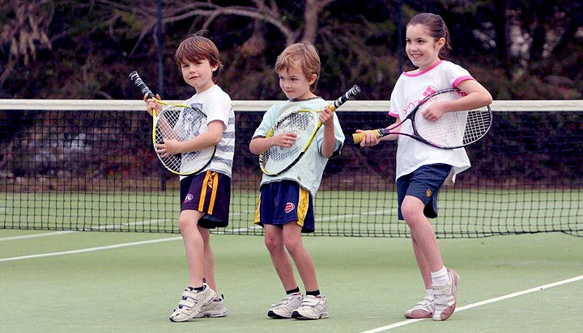
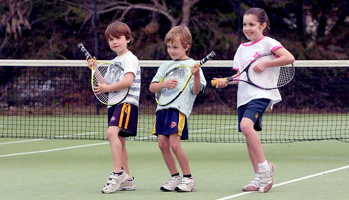

Чем полезен баскетбол для детей

Баскетбол для детей — отличный способ времяпрепровождения. Это веселый и интересный спорт, который нравится малышам. Он укрепляет здоровье и учит находить общий язык со сверстниками.
Во время игры в баскетбол игроки бегают и прыгают, наклоняются, задействуют руки. Благодаря этому работают мышцы всего тела. Такой вид спорта позволяет гармонично развивать физическую форму.
- Баскетбольный матч длится 48 минут, поэтому ребенок развивает выносливость. Укрепляется его дыхательная и сердечно–сосудистая система.
- Тренировки — лучшая профилактика многих заболеваний. Юный баскетболист болеет ОРВИ реже своих сверстников.
- Баскетбол полезен для зрения, ведь нужно попадать мячом в кольцо. Кроме того, он помогает развивать логическое мышление, поскольку постоянно приходится предугадывать действия противника.
- Во время игры ребенок получает эмоциональную и физическую разрядку.
- Регулярные тренировки формируют твердый характер. Благодаря этому ребенок старается добиваться успеха и в зале, и за его пределами.
- Баскетбол — командная игра, поэтому ребенок учится строить отношения в коллективе, сотрудничать с другими игроками и просто находит себе новых друзей.
Чтобы ребенок получал от тренировок исключительно пользу, предварительно посетите врача и узнайте, нет ли у малыша противопоказаний. Внимательно подойдите к выбору тренера и спортивной школы. Также позаботьтесь о качественной и удобной одежде и обуви для тренировок.
Баскетбол — сложный вид спорта, поэтому не стоит отдавать в него ребенка с пеленок. Оптимальный возраст для начала баскетбольных тренировок — 8–9 лет. В это время ребенок уже довольно крепкий, у него развита координация, и умственное развитие достигло нужно отметки.
Существуют баскетбольные группы для самых маленьких, но там дети занимаются общей физической подготовкой и просто учатся держать мяч.
До 8 лет ребенка можно отдать в любую другую спортивную группу, например, он может заниматься гимнастикой, акробатикой или плаваньем. Все этого подготовит его к будущим тренировкам по баскетболу.
Занятия по баскетболу после школы помогут вашему ребенку отвлечься от учебной нагрузки, весело и с пользой провести время в компании друзей. Если у малыша нет противопоказаний, отправляйте его в спортивный клуб.